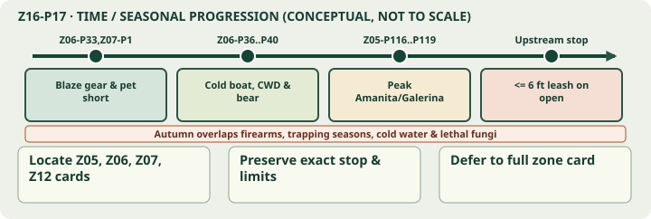

Z16-P17 · Field reference atlas · New manuscript
Autumn Hunting Blaze, Cold-Water Boating, CWD and Trapping-Season Index
Coordinate autumn safety across hunting blaze visibility, cold-water waterfowl boating, CWD, game cooling, mushroom-season amatoxins, and pet leashing in trapping zones.
When it applies · September through November autumn fieldwork across Minnesota public and private lands.
Equipment · Full offline reader (Z05, Z06, Z07, Z12), primary zone cards, and local emergency and agency references.

Actions
- Wear bright blaze orange or pink outer clothing on multi-use public lands during firearms seasons (Z06-P33) and keep dogs on short fixed leashes (at or below 6 ft) on open WMAs and forests during furbearer seasons (Z07-P14).[A02, A06, H02, L10]
- Enforce cold-water PFD wear and boat capacity limits during windy autumn boating (Z06-P36) alongside rapid game cooling below 40 F, CWD testing, and bear-meat cooking at least 165 F (Z06-P38..P40).[A02, H08, H10, H18]
- Recognize autumn peak fruiting of lethal Amanita, Galerina marginata, and Cortinarius mushrooms (Z05-P116..P119)—maintaining strict consumption WITHHELD_HOLD and immediate Poison Control referral.[A02, A05, B06, B07]
Failure recognition · Hiking in earth tones during deer season, running dogs off-leash near WMA culverts, or sampling autumn woodland mushrooms causes high-severity fatalities.[H02, L10, B06]
Verify · Blaze visibility, short-leash pet rules, cold-water PFD compliance, and autumn fungal HOLD rules are all active.[H02, L10, B06]
Stop or change course · Stop autumn boating in high wind, decline uncooled, untested CWD meat, and keep dogs leashed on every open multi-use forest or WMA.[H08, H18, L10]
Evidence and editorial notes
- A02 · National Weather Service · Winter Weather Safety: Stranded Motorists (Current web edition)
- Section: Seasonal Upper Midwest hazard calendar synthesis · Conditions: Integrating Z02, Z03, Z04, Z11, Z12, Z13, and Z15 seasonal shifts
Support: Seasonal hazard indexes align winter cold/ice, spring flood/thaw, summer heat/storms, and autumn hunting/fire windows without overriding local forecasts.
Limitations: Calendar windows are planning aids only; real-time NWS watches/warnings and site checks govern field action. · Conflicting evidence: None noted.
Editorial note: Anchors Z16 seasonal index cards. · Specialist reviewer: Meteorologist and emergency manager
Primary source · checked 2026-11-25 - A05 · Bell Museum (UMN) · Minnesota Biodiversity Atlas (Current web edition)
- Section: Botanical and fungal cross-reference with permanent consumption HOLD · Conditions: Indexing Z05 species morphology, lookalikes, and Poison Control referrals
Support: Atlas botanical/fungal tables index accepted names, phenology, and lethal lookalikes solely for observation, hazard avoidance, and voucher documentation.
Limitations: No Z16 index entry may imply edibility or bypass Z05 multi-character and expert-review gates. · Conflicting evidence: None noted.
Editorial note: Preserves Z05 consumption HOLD inside Z16. · Specialist reviewer: Botanist and mycologist
Primary source · checked 2026-11-25 - A06 · Minnesota DNR · Minnesota Fishing Regulations (Current web edition)
- Section: Lawful harvest, trapping-hazard, and regulatory cross-reference · Conditions: Indexing Z06 harvest, Z07 trap-hazard avoidance, and agency reporting lines
Support: Regulatory quick-references always pair species/season pointers with jurisdiction, authority lookup, check date, and explicit rejection of emergency exemptions.
Limitations: Index pointers expire with annual rule cycles and require current agency verification. · Conflicting evidence: None noted.
Editorial note: Preserves Z06/Z07 legal authority bounds in Z16. · Specialist reviewer: Wildlife legal reviewer
Primary source · checked 2026-11-25 - B06 · CDC MMWR · Notes from the Field: Severe Mushroom Poisoning — Minnesota 2018 (MMWR 68(21))
- Section: Minnesota severe mushroom poisoning outbreak (MMWR 68:21) · Conditions: Wild mushroom foraging and lookalike misidentification in Minnesota
Support: Foragers in Minnesota suffered severe hepatotoxic poisoning after mistaking lethal amatoxin-containing mushrooms for familiar edible species.
Limitations: Delayed gastrointestinal onset (6-24+ hours) followed by a false recovery phase precedes liver failure; treat any wild mushroom ingestion with symptoms as a medical emergency. · Conflicting evidence: None noted.
Editorial note: Critical Minnesota fungal hazard evidence. · Specialist reviewer: Medical toxicologist and mycologist
Primary source · checked 2026-11-25 - B07 · CDC MMWR · Amanita phalloides Mushroom Poisonings — 2026 Outbreak Report (MMWR 75(20))
- Section: Amanita phalloides outbreak and amatoxin lethality (MMWR 75:20) · Conditions: Recognizing lethal Amanita lookalike risk and cooking myths
Support: Amatoxins in death cap and destroying angel species survive boiling, freezing, and drying; misidentification causes acute liver failure and death.
Limitations: Never rely on folklore tests, boiling, peeling, or visual similarity to safe regional species. · Conflicting evidence: None noted.
Editorial note: Prohibits boiling/peeling mushroom myths. · Specialist reviewer: Medical toxicologist and mycologist
Primary source · checked 2026-11-25 - H02 · Minnesota DNR · Minnesota Hunting and Trapping Regulations (Current web edition)
- Section: Hunting licenses, zones, seasons, and legal methods · Conditions: Minnesota big game, small game, and bird hunting
Support: Hunters must verify current license, permit-area, season, legal-hours, blaze-clothing, and method rules with the governing authority prior to afield activity.
Limitations: Private-land trespass law, municipal ordinances, and tribal jurisdiction apply separately; emergencies do not suspend wildlife law. · Conflicting evidence: None noted.
Editorial note: Establishes Z06 hunting authority gate. · Specialist reviewer: Minnesota DNR wildlife law reviewer
Primary source · checked 2026-11-25 - H08 · Minnesota DNR · Chronic Wasting Disease (CWD) in Minnesota Deer (Current web edition)
- Section: Chronic Wasting Disease surveillance zones and carcass rules · Conditions: Harvesting cervids in Minnesota CWD management/control zones
Support: DNR designates CWD zones with mandatory sampling, carcass movement restrictions, and proper disposal rules.
Limitations: Infected deer can appear completely healthy; check current zone maps and test before consuming venison from affected areas. · Conflicting evidence: None noted.
Editorial note: Core Z06 CWD regulation and safety rule. · Specialist reviewer: Wildlife veterinarian and DNR reviewer
Primary source · checked 2026-11-25 - H10 · CDC · About Trichinellosis and Safe Wild Game Cooking (2024)
- Section: Trichinellosis prevention in wild bear and omnivore game · Conditions: Handling and cooking wild bear, wild boar, and carnivore/omnivore meat
Support: Wild bear and other omnivorous game can carry freeze-resistant Trichinella larvae; cook thoroughly to USDA-verified safe internal temperature verified with a food thermometer.
Limitations: Freezing wild game meat does not reliably kill Arctic/sylvatic Trichinella species; curing, smoking, or microwaving is unreliable. · Conflicting evidence: None noted.
Editorial note: Critical Z06 wild-game parasite safety rule. · Specialist reviewer: Food-safety microbiologist and veterinarian
Primary source · checked 2026-11-25 - H18 · Minnesota DNR · Waterfowl Hunting and Federal Migratory Bird Rules (Current web edition)
- Section: Waterfowl cold-water capsizing and non-toxic shot compliance · Conditions: Wetland and open-water fall waterfowl environments
Support: Cold-water immersion, overloaded boats, and wading drop-offs cause severe fatalities; wear flotation, check forecasts, and verify federal non-toxic shot and species limits.
Limitations: Emergencies and weather shifts override harvest goals; stay ashore in high wind or unverified ice. · Conflicting evidence: None noted.
Editorial note: Reconciles B013 P15-P16 with Z06 water/ice limits. · Specialist reviewer: Water-safety and wildlife reviewer
Primary source · checked 2026-11-25 - L10 · Minnesota DNR · Minnesota Trapping Regulations and Fur Harvest Rules (Current web edition)
- Section: Human and pet hazard recognition around lawful trapping areas · Conditions: Walking dogs or hiking in open public-use lands during furbearer seasons
Support: Keep dogs on short leashes on open multi-use lands during autumn/winter trapping seasons, avoid bait piles and shoreline culverts, and carry vet contact info.
Limitations: Body-gripping and cable devices present rapid fatal risk to unleashed pets; prevention via leashing is far safer than emergency release. · Conflicting evidence: None noted.
Editorial note: Core Z07 bystander & pet hazard prevention. · Specialist reviewer: Veterinary and outdoor-safety reviewer
Primary source · checked 2026-11-25
Source lineage · New manuscript (Z16 P20 seasonal index) · Classification · New manuscript.